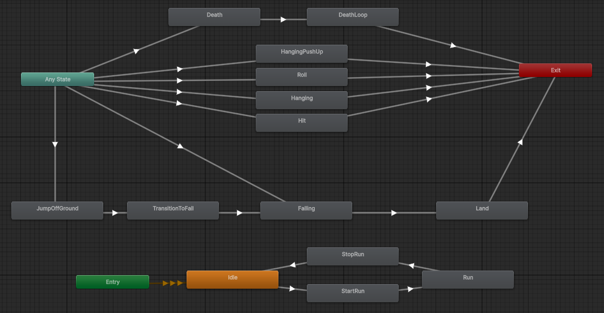

"Sanctum of Sorrow" is a 2D action-platformer, influenced by the atmosphere and mechanics of Bloodborne, one of my all-time favorite games. The project began as a prototype during my final semester of college, with a primary focus on refining my Unity coding abilities. Since then, I’ve dedicated substantial time to expanding and enhancing the code, implementing new mechanics and polish as my skills grew. During my internship at Baobab Games, I delved deeper into Unity development and brought this knowledge into the project. These new techniques, optimizations, and insights helped shape "Sanctum of Sorrow" into a more cohesive and polished experience. Though still in its early development stage, the game stands as a testament to my progress in game development and commitment to creating memorable gameplay. More updates and content are planned as the journey continues.
The player movement system is designed to deliver smooth, seamless transitions between various states, including running, jumping, and falling. Achieving this fluidity required implementing a state pattern design, which allowed each movement state to operate independently. By isolating each state in this way, I could efficiently debug and monitor specific behaviors, ensuring each one functioned precisely as intended. Additionally, By utilizing the animator compenent I synchronized character animations with gameplay actions to make every movement and transition visually clear to the player. This approach created a highly responsive system where actions felt intuitive and connected. The result is a movement experience that feels natural and immersive, allowing players to fully engage in the world of "Sanctum of Sorrow."

To enrich the combat experience in Sanctum of Sorrow, I implemented a set of attack options, including a fluid slash combo attack, each action accompanied by distinct visual and sound effects for added impact. The combat system features carefully designed hitboxes that enhance the precision and satisfaction of each strike, making combat feel strategic and rewarding. A standout element is the parry mechanic, which allows players to deflect enemy attacks and projectiles with skillful timing. This defensive maneuver adds depth to the gameplay, encouraging players to master timing and coordination, elevating the overall engagement of the combat experience.
In shaping the design of enemies for my game, my focus was on establishing an organized and flexible structure that facilitates the seamless development of future enemy types. To achieve this, I employed the principle of inheritance, creating a framework that allows for the easy extension and customization of enemy types. Recognizing the need for a systematic approach to enemy behaviors, I implemented a state machine for each enemy type. This choice enables a clear and modular organization of enemy actions, fostering a coherent and adaptable system. By incorporating inheritance and a state machine, the enemy design not only meets current objectives but also lays the foundation for a scalable and expandable roster of enemies in the evolving development of the game.
In designing the Interaction System, the primary objective was to empower players with a versatile tool for engaging with diverse elements within the game, including item pickups, NPC interactions, and textual readings. To achieve this, I developed a dynamic system, leveraging the efficiency of delegates and events. This not only ensures seamless interaction handling but also establishes a foundation for scalability, allowing the feature to evolve alongside the gameplay dynamics.
In this project, I leveraged ray tracing to enhance both combat mechanics and audio immersion. Utilizing ray tracing, I ensured precise hitboxes for player attacks, elevating the combat experience with accurate collision detection. Additionally, I designed footsteps sound system which, dynamically generates distinct sounds based on the ground type. This innovative approach employs ray tracing to detect the surface beneath, providing players with an immersive auditory experience tied intricately to the in-game environment.